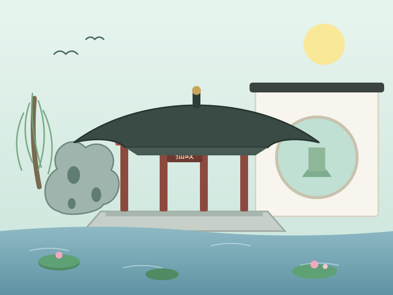
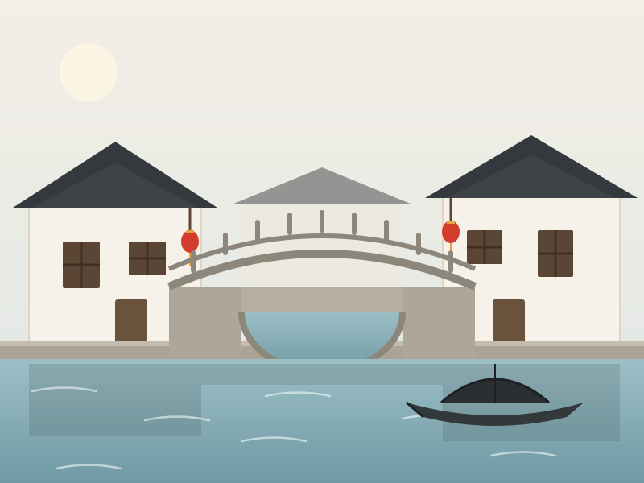

小罗
SA225
四人同心 · 各展所长 · 携手完成本次网站设计
点击成员头像或「个人主页」按钮，进入对应成员的个人主页
「上有天堂，下有苏杭」—— 一座 2500 余年城址未迁的江南水城
位于江苏省东南部、长江三角洲中部，太湖东岸， 京杭大运河纵贯南北，东接上海，北依长江，自古便是水陆要冲、商贸重镇。
常住人口约 1300 万（2023 年末约 1295.8 万）， 下辖姑苏、吴中、相城、工业园区、高新区等区并代管四个县级市， 昆山、张家港常年位居全国百强县前列。
古典园林之城、江南水乡、丝绸之府、状元之乡， 也是 GDP 常年居全国前列的现代化制造业与开放型经济大市。
苏州最负盛名的是古典园林：拙政园、留园跻身中国四大名园， 网师园、环秀山庄等 9 座园林被整体列入《世界文化遗产名录》， "移步换景、咫尺之内再造乾坤"。城外有吴中第一名胜虎丘 及其千年斜塔云岩寺塔；城内有"姑苏城外寒山寺，夜半钟声到客船"的 寒山寺，有水陆并行、河街相邻的历史街区平江路、山塘街； 周边的周庄、同里、甪直等古镇保存着典型的江南水乡风貌， 金鸡湖畔则展示着现代苏州的繁华。


说明：以上为手绘风格城市风貌示意图，可在 images 文件夹中用真实照片替换同名文件。
苏州建城已有 2500 多年，且城址至今基本未变，是吴文化的重要发祥地。 这里诞生了"百戏之祖"昆曲和婉转软糯的苏州评弹； 中国四大名绣之一的苏绣、桃花坞木版年画、碧螺春制作技艺等传承至今； 苏州自古文风鼎盛、状元辈出，今天的苏州博物馆由建筑大师贝聿铭设计， 粉墙黛瓦与光影庭院延续着这座城市雅致的审美。
苏帮菜讲究"不时不食"、浓油赤酱中见清甜，街头小吃同样精致：